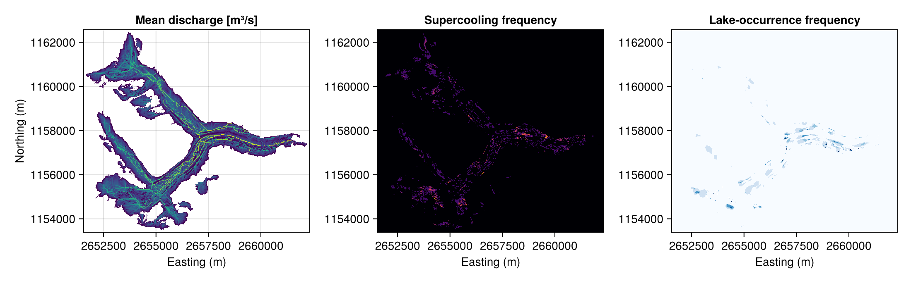

Worked Example: Unteraar Glacier
This page works through a complete subglacial routing analysis on Unteraar glacier, Switzerland, using the real bedrock and surface DEM data bundled with the package. It demonstrates the full WWFS → WWFR workflow:
- deterministic subglacial routing with
WhereTheWaterFlows.Subglacially, and - Monte Carlo uncertainty propagation over uncertain bed topography with
WhereTheWaterFlows.Randomly.
Data source: Grab (2020), incorporating SwissTopo SwissALTI3D surface data (OGD). Files are stored under examples/data/ in the package (CC BY 4.0).
Loading the data
Unteraar glacier lies in the Bernese Oberland, Switzerland. The DEM covers a 539 × 459 grid of cells at 20 m spacing in the Swiss LV95 coordinate system. The western edge (low x-index, low easting) is the glacier terminus.
using WhereTheWaterFlows, Statistics
using Random; Random.seed!(42)
WWFS = WhereTheWaterFlows.Subglacially
WWFR = WhereTheWaterFlows.Randomly
datadir = joinpath(Base.pkgdir(WhereTheWaterFlows), "examples", "data")
nx, ny = 539, 459
beddem = Matrix{Float32}(undef, nx, ny)
surfdem = Matrix{Float32}(undef, nx, ny)
x = Vector{Float32}(undef, nx)
y = Vector{Float32}(undef, ny)
open(joinpath(datadir, "bed.bin"), "r") do f; read!(f, beddem); end
open(joinpath(datadir, "surface.bin"), "r") do f; read!(f, surfdem); end
open(joinpath(datadir, "x.bin"), "r") do f; read!(f, x); end
open(joinpath(datadir, "y.bin"), "r") do f; read!(f, y); end
dx = x[2] - x[1] # ≈ 20 m (LV95 easting spacing)
println("Grid: $(nx)×$(ny), dx = $(dx) m")Grid: 539×459, dx = 20.0 mThe bed DEM has NaN everywhere outside the glacier (rock / no-data):
nan_frac = sum(isnan.(beddem)) / length(beddem)
println("Fraction of NaN bed cells: $(round(nan_frac, digits=3))")Fraction of NaN bed cells: 0.771Preparing inputs
NaN bed values would propagate into the Shreve hydraulic potential φ = fH(ρᵢ/ρw) + zb, where H = zs − zb is ice thickness. We replace off-glacier bed values with the surface elevation (zero ice thickness) so that φ stays finite everywhere; the routing mask then restricts actual routing to glacier cells only.
# Replace NaN-bed cells with surface elevation (zero thickness → φ stays finite)
beddem_clean = copy(beddem)
glacier = .!isnan.(beddem)
beddem_clean[.!glacier] .= surfdem[.!glacier]
# Routing mask: only route under ice
mask = glacier
# Uniform 1 mm/day basal melt source, converted to m/s
source = fill(Float32(1e-3 / 86400), nx, ny)
println("Ice-covered cells: $(sum(glacier)) / $(length(glacier)) ",
"($(round(100*mean(glacier), digits=1)) %)")Ice-covered cells: 56726 / 247401 (22.9 %)Deterministic routing
waterflows_subglacial routes water according to the Shreve hydraulic potential, with optional Röthlisberger pressure-melting-point deflection controlled by gamma. Setting gamma = WWFS.GAMMA (≈ −0.31) enables the full deflection model.
out = WWFS.waterflows_subglacial(
surfdem, beddem_clean, dx,
1.0, # floatfrac: full flotation
source, # basal melt source [m/s]
mask;
gamma = WWFS.GAMMA,
drain_pits = true,
bnd_as_sink = true,
nan_as_sink = true,
)
(; area, sinks, pits) = out.routing
println("Sinks (outlets): ", length(sinks))
println("Unresolved pits: ", length(pits))
println("Supercooled cells: ", sum(out.pressmelt.sc_locs))
println("Max discharge [m³/s]: ",
round(maximum(area.total[glacier]), digits=4))
println("Max lake depth (fixed surf) [m water equivalent]: ",
round(maximum(out.lakes.depth_fixed_surface[glacier]), digits=1))
println("Max lake depth (free surface) [m]: ",
round(maximum(out.lakes.depth_free_surface[glacier]), digits=1))Sinks (outlets): 6190
Unresolved pits: 0
Supercooled cells: 1179
Max discharge [m³/s]: 0.1295
Max lake depth (fixed surf) [m water equivalent]: 111.4
Max lake depth (free surface) [m]: 10.0Interpreting the output:
- Sinks are located both at the terminus (western domain boundary, where
bnd_as_sink=truecreates outlets) and along the glacier margins (wherenan_as_sink=trueturns cells adjacent to the ice edge into outlets). The spread across x-indices reflects the irregular glacier geometry. - Supercooled cells arise where the bed slope opposing ice flow is steep enough for the Röthlisberger criterion to be met. With
avoid_sc=false(default), water still routes through these cells; the physical interpretation is that R-channel flow is suppressed there but distributed flow continues. - Lake depths identify where subglacial water would pond if it could not escape.
drain_pits=trueroutes water out of all closed depressions, so no water actually accumulates, but the depth diagnostic reveals potential ponding sites. - Discharge units:
area.totalaccumulatessource × dx²(m³/s) plus dissipation- and pressure-melt contributions along each flow path.
Monte Carlo bed-uncertainty propagation
Bed topography beneath a glacier is derived from geophysical surveys and carries significant uncertainty. Here we propagate a 10 % relative bed uncertainty with a 500 m spatial correlation length through the routing model using the WWFR workflow:
- Describe each uncertain field with
WWFR.Uncertainty. - Build
model,sample, andreduce!withWWFR.make_fns_subglacial. - Run the Monte Carlo loop with
WWFR.map_mc.
# Surface treated as exact; bed carries 10 % relative uncertainty, 500 m corr. length
surfdem_uc = WWFR.Uncertainty()
beddem_uc = WWFR.Uncertainty(reluc=0.1, correlation_length=500.0)
floatfrac_uc = WWFR.Uncertainty()
source_uc = WWFR.Uncertainty()
floatfrac_arr = fill(Float32(1.0), nx, ny)
model, sample, reduce! = WWFR.make_fns_subglacial(
dx,
surfdem, surfdem_uc,
beddem_clean, beddem_uc,
floatfrac_arr, floatfrac_uc,
source, source_uc,
[]; # no explicit catchment-sink tracking here
mask = mask,
gamma = WWFS.GAMMA,
)
aggr = WWFR.map_mc(model, sample, reduce!, 5; progressmeter=false)
println("MC samples completed: ", aggr.n_samples[])
println("Mean max discharge [m³/s]: ",
round(maximum(aggr.areas_total[glacier]), digits=4))
println("Max supercooling frequency: ",
round(maximum(aggr.sc_locs[glacier]), digits=3))
println("Max lake-occurrence fraction:",
round(maximum(aggr.lake_mask_fixed_surface[glacier]), digits=3))MC samples completed: 5
Mean max discharge [m³/s]: 0.0996
Max supercooling frequency: 0.8
Max lake-occurrence fraction:1.0Five samples is intentionally small for documentation build speed. For production use, 50–200 samples gives more stable statistics.
Interpreting the MC output
map_mc returns an aggregate named tuple with ensemble statistics:
For the full subglacial aggregate-output API (including shapes/types and reduction semantics), see the consolidated table in WhereTheWaterFlows.Randomly (WWFR), section "Consolidated subglacial aggregate outputs (make_fns_subglacial)".
| Field | Contents |
|---|---|
aggr.areas_total | Mean discharge field [m³/s] over all realizations |
aggr.sc_locs | Fraction of realizations in which each cell was supercooled (0–1) |
aggr.lake_mask_fixed_surface | Fraction of realizations with lake depth > 10 m (fixed-surface) |
aggr.lake_depth_fixed_surface | Mean lake depth [m] over all realizations |
aggr.melt_rate | Mean melt-rate field [m/s] over all realizations |
A summary across all glacier cells:
sc_frac = mean(aggr.sc_locs[glacier])
lake_frac = mean(aggr.lake_mask_fixed_surface[glacier])
println("Mean supercooling frequency (glacier cells): $(round(sc_frac, sigdigits=3))")
println("Mean lake-occurrence fraction (glacier cells): $(round(lake_frac, sigdigits=3))")Mean supercooling frequency (glacier cells): 0.0327
Mean lake-occurrence fraction (glacier cells): 0.0224Areas where sc_locs approaches 1 are structurally supercooled — the pressure-melting effect is robust to bed uncertainty. Areas where it is near 0 are supercooled only in some realizations, indicating that the effect is sensitive to bed geometry there.
Visualising results
Add CairoMakie to plot the spatial fields:
using CairoMakie
fig = Figure(size=(1100, 340))
ax1 = Axis(fig[1,1]; title="Mean discharge [m³/s]",
xlabel="Easting (m)", ylabel="Northing (m)")
ax2 = Axis(fig[1,2]; title="Supercooling frequency",
xlabel="Easting (m)")
ax3 = Axis(fig[1,3]; title="Lake-occurrence frequency",
xlabel="Easting (m)")
heatmap!(ax1, x, y, log10.(max.(aggr.areas_total, 1e-10)); colormap=:viridis)
heatmap!(ax2, x, y, aggr.sc_locs; colormap=:inferno, colorrange=(0,1))
heatmap!(ax3, x, y, aggr.lake_mask_fixed_surface; colormap=:Blues, colorrange=(0,1))
fig
To visualize the single deterministic run instead, use out.routing.area.total, out.pressmelt.sc_locs, and out.lakes.depth_fixed_surface in place of the MC aggregates.
Data attribution
- This example uses the Grab (2020) Swiss Glacier Thickness dataset and SwissTopo SwissALTI3D data under OGD terms; see References.
See also: Subglacially, Randomly, Tutorial, and API Reference.